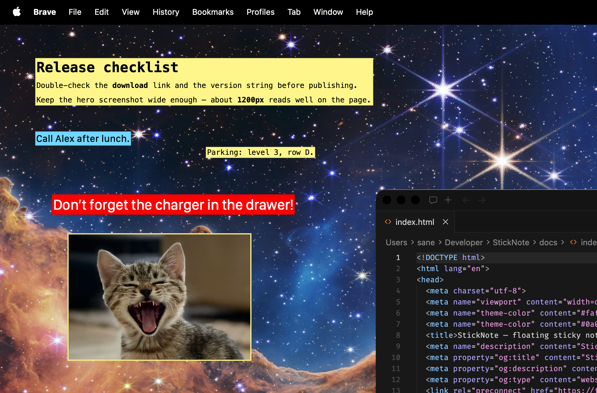

Menu bar
Quick actions from the status item — single-click toggles note visibility; double-click opens a new note.
macOS menu bar app
Floating sticky notes for your Mac — Markdown, layouts, clipboard images, and quick actions from the menu bar. Stored with SwiftData.
Product
Designed to stay out of the way until you need it — then snap open a note, paste an image, or jump to the list.
Quick actions from the status item — single-click toggles note visibility; double-click opens a new note.
Always-on-top windows with draggable chrome and optional maximize behaviors.
Render Markdown in the note view for readable, structured content.
Browse every note, including hidden ones, from a dedicated window.
Default layout presets for new notes — editable in Settings.
Create a note from a pasted image when the pasteboard holds image data.
Global shortcuts for new note, paste-from-clipboard note, and show/hide all notes. Launch at login, delete confirmation, trash vs permanent delete, show on all spaces, menubar note count, and more.
Interface
A quick look at floating notes on your desktop.

macOS 15.0 or later. Built with Swift, SwiftUI, SwiftData, and AppKit.